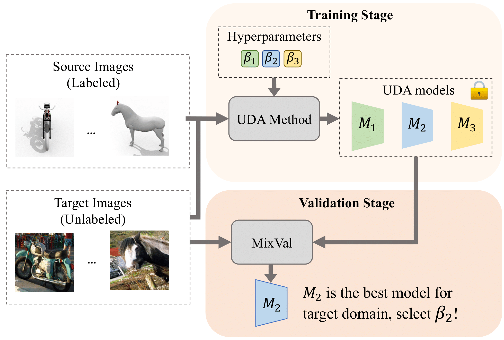

|
Research
My research interests lie in computer vision and deep learning. Specifically, I'm interested in generalizable and label-efficient deep learning, covering but not limited to the following topics:
- Domain adaptation and semi-supervised learning: How to leverage unlabeled data for training a task-specific model?
- Representation learning and self-supervised learning: How to pre-train a generalized foundation model?
- Model-based transfer learning and fine-tuning: How to transfer the knowledge in a pre-trained source model or foundation model to a different domain or task?
- Large-scale empirical studies on deep learning models: How to observe, understand, and explain the behavior of foundation models?
|
|

|
Mixed Samples as Probes for Unsupervised Model Selection in Domain Adaptation
Dapeng Hu,
Jian Liang,
Jun Hao Liew,
Chuhui Xue,
Song Bai,
Xinchao Wang
Advances in Neural Information Processing Systems (NeurIPS), 2023.
arXiv
We proposed MixVal, a novel target-only validation method for unsupervised domain adaptation with state-of-the-art model selection performance and improved stability.
|
|
|
PseudoCal: A Source-Free Approach to Unsupervised Uncertainty Calibration in Domain Adaptation
Dapeng Hu,
Jian Liang,
Xinchao Wang,
Chuan-Sheng Foo†
Under review
arXiv
We proposed PseudoCal, a source-free calibration method for unsupervised domain adaptation, which outperforms existing methods in reducing calibration error across 10 UDA methods.
|
|
|
UMAD: Universal Model Adaptation under Domain and Category Shift
Jian Liang*,
Dapeng Hu*,
Jiashi Feng,
Ran He
Under review
arXiv
We proposed a novel and effective method UMAD to tackle realistic open-set domain adaptation tasks where neither source data nor the prior about the label set overlap across domains is available for target domain adaptation.
|
|
Professional Service
Journal Reviewer: TMLR 2022, TPAMI 2022, TKDE 2022
Conference Reviewer: ICML 2021-2023, NeurIPS 2021-2023, CVPR 2022-2023, ICCV 2023, ICLR 2022-2024
Head TA, EE6934: Deep Learning (Advanced), 2020 Spring
Head TA, EE5934: Deep Learning, 2020 Spring
TA, EE4704: Image Processing and Analysis, 2019 Fall
TA, EE2028: Microcontroller Programming and Interfacing, 2019 Fall
|
|